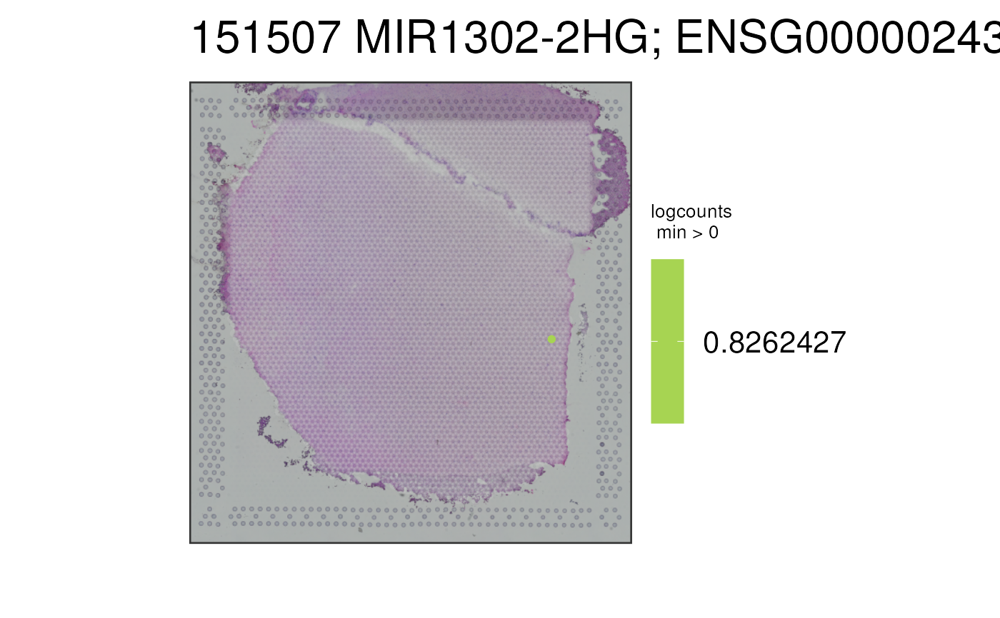

This function visualizes the gene expression stored in assays(spe) or any
continuous variable stored in colData(spe) for one given sample at the
spot-level using (by default) the histology information on the background.
To visualize clusters (or any discrete variable) use vis_clus().
vis_gene(
spe,
sampleid,
geneid = "SCGB2A2; ENSG00000110484",
spatial = TRUE,
assayname = "logcounts",
minCount = 0,
viridis = TRUE,
...
)| spe | Defaults to the output of
|
|---|---|
| sampleid | A |
| geneid | A |
| spatial | A |
| assayname | The name of the |
| minCount | A |
| viridis | A |
| ... | Passed to paste0() for making the title of the
plot following the |
A ggplot2 object.
This function subsets spe to the given sample and prepares the
data and title for vis_gene_p(). It also adds a caption to the plot.
Other Spatial gene visualization functions:
vis_gene_p(),
vis_grid_gene()
if (enough_ram()) {
## Obtain the necessary data
if (!exists("spe")) spe <- fetch_data("spe")
## Valid `geneid` values are those in
head(rowData(spe)$gene_search)
## or continuous variables stored in colData(spe)
## Visualize a default gene on the non-viridis scale
vis_gene(
spe = spe,
sampleid = "151507",
viridis = FALSE
)
## Visualize a continuous variable, in this case, the ratio of chrM
## gene expression compared to the total expression at the spot-level
vis_gene(
spe = spe,
sampleid = "151507",
geneid = "expr_chrM_ratio"
)
}
#> snapshotDate(): 2021-05-05
#> 2021-05-14 22:57:35 loading file /github/home/.cache/R/BiocFileCache/21e220788ecc_Human_DLPFC_Visium_processedData_sce_scran_spatialLIBD.Rdata%3Fdl%3D1
